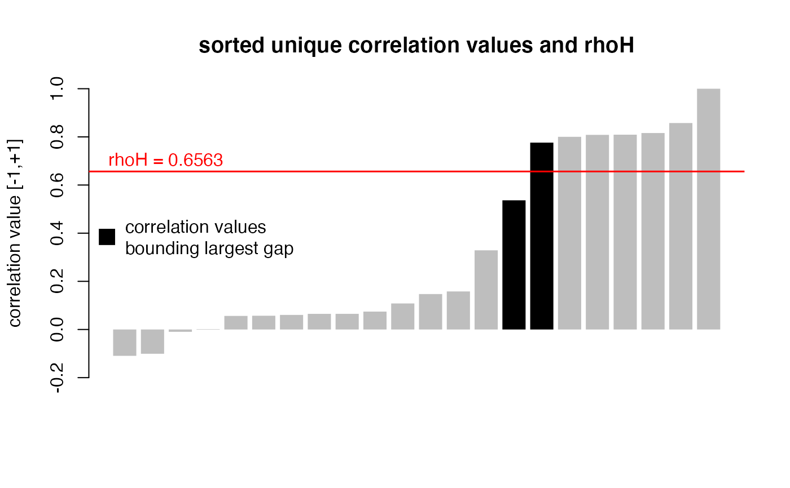

Returns the item correlation matrix (and when K dimensions have been specified, K matrices) that the function mdepriv internally generates
when the argument method = "bv" and the argument bv_corr_type = "mixed" or "pearson"
or when the argument wa is specified and the argument wb = "mixed" or "pearson".
Permits inspection of the correlation structure and can be used for complementary analytic purposes such as factor analysis or biplots.
corr_mat( data, items, sampling_weights = NA, corr_type = c("mixed", "pearson"), output = c("numeric", "type", "both") )
| data | a |
|---|---|
| items | a character string vector or list of such vectors specifying the indicators / items within the argument |
| sampling_weights | a character string corresponding to column heading of a numeric variable within the argument |
| corr_type | a character string selecting the correlation type.
Available choices are |
| output | a character string vector selecting the output. Available choices are |
Either a single matrix or a list composed of several matrixes (s. argument "output").
The calculation of the correlation coefficient for a pair of items is based on the function weightedCorr.
When setting the argument corr_type to "mixed"
the appropriate correlation type "pearson", "polyserial" or "polychoric"
is automatically detected for each pair of items by the following rules:
"pearson": both items have > 10 distinct values.
"polyserial": one item has \(\le\) 10, the other > 10 distinct values.
"polychoric": both items have \(\le\) 10 distinct values.
When the argument corr_type is set to "pearson" this correlation type is forced on all item pairs.
Depending on the correlation type(s) used, the matrix may not be positive semidefinite and therefore not immediately suitable for purposes such as factor analysis.
This is more likely to happen when some of the items are binary.
The function nearPD will produce the nearest positive definite matrix.
#> id y1 y2 y3 y4 y5 y6 y7 sampl_weights #> 1 1 0 0 0 0.0 0.369 0.174 0.196 0.556 #> 2 2 1 0 1 0.2 0.762 0.832 1.000 1.500 #> 3 3 0 1 1 0.4 0.708 0.775 0.833 0.973#> y1 y4 y5 y6 #> y1 1.0000000 0.81597841 0.8574640 0.32881030 #> y4 0.8159784 1.00000000 0.8083585 0.05629782 #> y5 0.8574640 0.80835852 1.0000000 -0.10943492 #> y6 0.3288103 0.05629782 -0.1094349 1.00000000#> y1 y4 y5 y6 #> y1 "polychoric" "polychoric" "polyserial" "polyserial" #> y4 "polychoric" "polychoric" "polyserial" "polyserial" #> y5 "polyserial" "polyserial" "pearson" "pearson" #> y6 "polyserial" "polyserial" "pearson" "pearson"#> $numeric #> y1 y4 y5 y6 #> y1 1.0000000 0.81597841 0.8574640 0.32881030 #> y4 0.8159784 1.00000000 0.8083585 0.05629782 #> y5 0.8574640 0.80835852 1.0000000 -0.10943492 #> y6 0.3288103 0.05629782 -0.1094349 1.00000000 #> #> $type #> y1 y4 y5 y6 #> y1 "polychoric" "polychoric" "polyserial" "polyserial" #> y4 "polychoric" "polychoric" "polyserial" "polyserial" #> y5 "polyserial" "polyserial" "pearson" "pearson" #> y6 "polyserial" "polyserial" "pearson" "pearson" #># with sampling weights (3rd argument) corr_mat(simul_data, c("y1", "y4", "y5", "y6"), "sampl_weights")#> y1 y4 y5 y6 #> y1 1.0000000 0.79871297 0.84893375 0.37055782 #> y4 0.7987130 1.00000000 0.81370895 0.04023532 #> y5 0.8489338 0.81370895 1.00000000 -0.09680152 #> y6 0.3705578 0.04023532 -0.09680152 1.00000000# choose correlation type corr_mat_default <- corr_mat(simul_data, c("y1", "y4", "y5", "y6")) corr_mat_mixed <- corr_mat(simul_data, c("y1", "y4", "y5", "y6"), corr_type = "mixed") all.equal(corr_mat_default, corr_mat_mixed) # "mixed is corr_type's default#> [1] TRUE# force a correlation type on all pairs of items corr_mat(simul_data, c("y1", "y4", "y5", "y6"), corr_type = "pearson")#> y1 y4 y5 y6 #> y1 1.0000000 0.60056932 0.4629204 0.21372370 #> y4 0.6005693 1.00000000 0.6792278 0.07185579 #> y5 0.4629204 0.67922776 1.0000000 -0.10943492 #> y6 0.2137237 0.07185579 -0.1094349 1.00000000# grouping items in dimensions corr_mat(simul_data, list(c("y1", "y4", "y5", "y6"), c("y2", "y3", "y7")))#> $`Dimension 1` #> y1 y4 y5 y6 #> y1 1.0000000 0.81597841 0.8574640 0.32881030 #> y4 0.8159784 1.00000000 0.8083585 0.05629782 #> y5 0.8574640 0.80835852 1.0000000 -0.10943492 #> y6 0.3288103 0.05629782 -0.1094349 1.00000000 #> #> $`Dimension 2` #> y2 y3 y7 #> y2 1.00000000 0.064950690 0.060486856 #> y3 0.06495069 1.000000000 0.001620888 #> y7 0.06048686 0.001620888 1.000000000 #># customized group / dimension labels corr_mat(simul_data, list("Group A" = c("y1", "y4", "y5", "y6"), "Group B" = c("y2", "y3", "y7")))#> $`Group A` #> y1 y4 y5 y6 #> y1 1.0000000 0.81597841 0.8574640 0.32881030 #> y4 0.8159784 1.00000000 0.8083585 0.05629782 #> y5 0.8574640 0.80835852 1.0000000 -0.10943492 #> y6 0.3288103 0.05629782 -0.1094349 1.00000000 #> #> $`Group B` #> y2 y3 y7 #> y2 1.00000000 0.064950690 0.060486856 #> y3 0.06495069 1.000000000 0.001620888 #> y7 0.06048686 0.001620888 1.000000000 #># mdepriv output / returns as template for corr_mat arguments # items grouped as dimensions dim <- list("Group X" = c("y1", "y4", "y5", "y6"), "Group Z" = c("y2", "y3", "y7")) # model: betti-verma ("bv"): correlation type = pearson, rhoH = NA (data driven) bv_pearson <- mdepriv(simul_data, dim, "sampl_weights", method = "bv", bv_corr_type = "pearson", output = "all") # use model output as arguments corr_mat(bv_pearson$data, bv_pearson$items, bv_pearson$sampling_weights, corr_type = bv_pearson$wb, output = "both")#> $numeric #> $numeric$`Group X` #> y1 y4 y5 y6 #> y1 1.0000000 0.58315592 0.45257771 0.23819918 #> y4 0.5831559 1.00000000 0.68561919 0.05063697 #> y5 0.4525777 0.68561919 1.00000000 -0.09680152 #> y6 0.2381992 0.05063697 -0.09680152 1.00000000 #> #> $numeric$`Group Z` #> y2 y3 y7 #> y2 1.00000000 0.06293436 0.03891441 #> y3 0.06293436 1.00000000 0.01315840 #> y7 0.03891441 0.01315840 1.00000000 #> #> #> $type #> $type$`Group X` #> y1 y4 y5 y6 #> y1 "pearson" "pearson" "pearson" "pearson" #> y4 "pearson" "pearson" "pearson" "pearson" #> y5 "pearson" "pearson" "pearson" "pearson" #> y6 "pearson" "pearson" "pearson" "pearson" #> #> $type$`Group Z` #> y2 y3 y7 #> y2 "pearson" "pearson" "pearson" #> y3 "pearson" "pearson" "pearson" #> y7 "pearson" "pearson" "pearson" #> #># model: user defined double weighting # 1st factor = wa = "equal", 2nd factor = wa = "mixed" (correlation type), # rhoH = NA (data driven) eq_mixed <- mdepriv(simul_data, dim, "sampl_weights", wa = "equal", wb = "mixed", output = "all") # use model output as arguments corr_mat(eq_mixed$data, eq_mixed$items, eq_mixed$sampling_weights, corr_type = eq_mixed$wb, output = "both")#> $numeric #> $numeric$`Group X` #> y1 y4 y5 y6 #> y1 1.0000000 0.79871297 0.84893375 0.37055782 #> y4 0.7987130 1.00000000 0.81370895 0.04023532 #> y5 0.8489338 0.81370895 1.00000000 -0.09680152 #> y6 0.3705578 0.04023532 -0.09680152 1.00000000 #> #> $numeric$`Group Z` #> y2 y3 y7 #> y2 1.00000000 0.10363632 0.05015889 #> y3 0.10363632 1.00000000 0.01656435 #> y7 0.05015889 0.01656435 1.00000000 #> #> #> $type #> $type$`Group X` #> y1 y4 y5 y6 #> y1 "polychoric" "polychoric" "polyserial" "polyserial" #> y4 "polychoric" "polychoric" "polyserial" "polyserial" #> y5 "polyserial" "polyserial" "pearson" "pearson" #> y6 "polyserial" "polyserial" "pearson" "pearson" #> #> $type$`Group Z` #> y2 y3 y7 #> y2 "polychoric" "polychoric" "polyserial" #> y3 "polychoric" "polychoric" "polyserial" #> y7 "polyserial" "polyserial" "pearson" #> #># model: user defined double weighting # 1st factor = wa = "bv", 2nd factator = wb = "diagonal" # (all off-diagonal correlations = 0), rhoH = NA (irrelvant) bv_diagonal <- mdepriv(simul_data, dim, "sampl_weights", wa = "bv", wb = "diagonal", output = "all") # use model output as arguments if (FALSE) { corr_mat(bv_diagonal$data, bv_diagonal$items, bv_diagonal$sampling_weights, corr_type = bv_diagonal$wb, output = "both") } # would trigger an error because: bv_diagonal$wb#> [1] "diagonal"# if corr_type is left as the default or set to a valid option, then ... corr_mat(bv_diagonal$data, bv_diagonal$items, bv_diagonal$sampling_weights)#> $`Group X` #> y1 y4 y5 y6 #> y1 1.0000000 0.79871297 0.84893375 0.37055782 #> y4 0.7987130 1.00000000 0.81370895 0.04023532 #> y5 0.8489338 0.81370895 1.00000000 -0.09680152 #> y6 0.3705578 0.04023532 -0.09680152 1.00000000 #> #> $`Group Z` #> y2 y3 y7 #> y2 1.00000000 0.10363632 0.05015889 #> y3 0.10363632 1.00000000 0.01656435 #> y7 0.05015889 0.01656435 1.00000000 #># ... it works # for the arguments data, items and sampling_weights the ... # ... corresponding mdepriv outputs are always valid # plot unique correlation values and their relation to rhoH items_sel <- c("y1", "y4", "y5", "y6", "y2", "y3", "y7") # a selection of items corr_mat <- corr_mat(simul_data, items_sel) # corr_type default: "mixed" rhoH <- mdepriv(simul_data, items_sel, method = "bv", output = "rhoH") # bv_corr_type default: "mixed" corr_val <- unique(sort(corr_mat)) # sorted unique correlation values dist_rhoH_corr <- abs(corr_val - rhoH) # distance of corr. values to rhoH bounding_rhoH <- abs(dist_rhoH_corr - min(dist_rhoH_corr)) < 10^-10 # TRUE if one of the two corr. values bounding rhoH else FALSE corr_val_col <- ifelse(bounding_rhoH, "black", "gray") # colors for corr. values barplot(corr_val, col = corr_val_col, border = NA, ylim = c(-0.2, 1), ylab = "correlation value [-1,+1]", main = "sorted unique correlation values and rhoH" )legend("left", "correlation values\nbounding largest gap", col = "black", pch = 15, pt.cex = 2, bty = "n" )